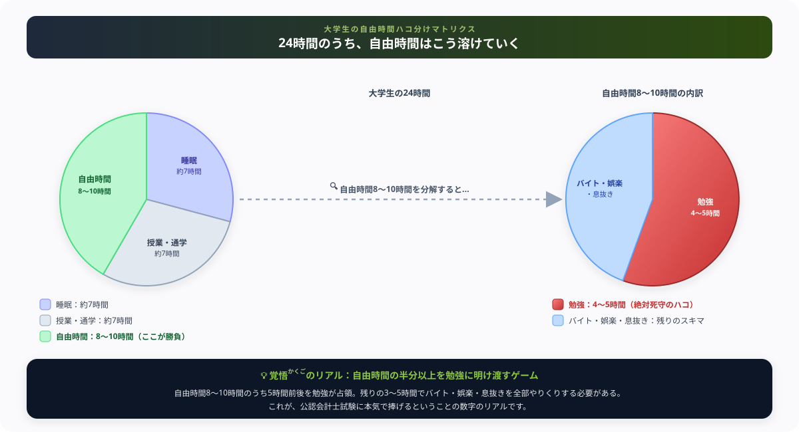

大学生必見！公認会計士試験に挑む前に知るべきリアル【現役受験生の本音】
『将来、年収1,000万超えの勝ち組になりたいから公認会計士を目指そうかな！』と考えている大学生のあなたへ。直球で言います。
『なんとなく』で予備校のパンフレットをめくったのなら、今すぐ閉じてください（笑）。
僕の周りでも、サークルやバイトを諦めきれずに数ヶ月で「うわっ、なんじゃこりゃ！暗記量多すぎて無理！」と数十万円の予備校代をドブに捨てて撤退していった仲間を何人も見てきました。
現在進行形で毎日10時間電卓を叩いている僕の視点から、大学生活の時間をどうハコ分けして捧げるべきか、ガチの本音で【大学生の会計士覚悟チェック】をナビゲートします！ 最後まで読んで、末尾の【いいねボタン】もポチッと押してもらえると嬉しいです。
まず「覚悟チェック」をしてください
公認会計士試験は、日本三大国家資格のひとつです。「なんとなく挑戦してみよう」では途中で必ず折れます。以下のチェックリストに正直に向き合ってください。
- 必須毎日4〜6時間以上、勉強に使える時間を確保できる
- 必須バイトを週1〜2回まで減らせる（または完全にやめられる）
- 必須合格まで2〜4年かかる可能性を受け入れられる
- 必須友人の遊びの誘いを断れる精神力がある
- 必須予備校費用（50〜80万円）の目処が立っている
- 要注意バイトを週3〜4回以上続けながら合格しようとしている
- 要注意「とりあえず始めてみて、つらくなったら考える」と思っている
- 要注意大学の単位も普通に取りながら両立できると思っている
1日何時間、勉強すればいいのか？
公認会計士試験の合格に必要な学習時間は、3,000〜5,000時間と言われています。在学中に合格した人の平均は約3,500時間です。
これを2年で達成しようとすると、1年で1,750時間、つまり1日あたり約4.8時間の勉強が必要になります。
| 目標期間 | 1日の必要勉強時間（3,500時間の場合） |
|---|---|
| 2年で合格 | 約4〜5時間／日（休日も含む毎日） |
| 3年で合格 | 約3〜4時間／日 |
| 4年で合格 | 約2〜3時間／日 |
「3年あれば余裕じゃないか」と思いましたか？でも現実は、毎日3時間を何百日も続けるというのは想像より遥かにきつい。モチベーションが落ちる日、体調が悪い日、試験に落ちて心が折れる日、そういう日も含めて毎日積み上げる必要があります。

バイトは週何回まで許容されるのか
合格者の体験談を調べると、在学中合格者の多くはバイトを週1〜2回、または完全にやめていることがわかります。
バイトをやめられない理由として多いのが、生活費・予備校費用・奨学金の返済です。これは現実的な問題なので否定できません。ただし、「バイトを週3〜4回しながら公認会計士に合格する」のは、普通の人間にはほぼ不可能だと、現役で毎日戦っている僕は感じています。
| バイト頻度 | 現実的な評価 |
|---|---|
| 週0回（完全ゼロ） | 最も合格しやすい環境。親・奨学金・貯金で生活費を確保できる人向け |
| 週1〜2回 | 合格者の多くがここ。勉強時間との両立ギリギリのライン |
| 週3〜4回 | 勉強時間が慢性的に不足。精神的な疲弊も重なり、継続が難しくなる |
| 週5回以上 | 現実的に合格は難しい |
忍耐力の話。これが一番大事かもしれない
勉強時間やバイトの話は数字で測れますが、忍耐力は数字では測れません。でも、毎日机に向かっている僕が一番痛感しているのはここです。
公認会計士試験には短答式試験と論文式試験の2段階があります。短答式だけでも合格率は近年9〜12%程度。つまり10人に9人近くは落ちる試験です。1年間勉強して、落ちて、また1年勉強する——これを繰り返せる精神力が必要です。
- 周りの友人が就活して内定をもらっていく中、自分だけが試験に縛られている
- 短答式に合格したのに論文で落ちて、振り出しに戻る感覚
- 予備校のクラスで自分だけ合格できていない焦り
- 「やめた方がいいのかな」と毎日頭の片隅で考える消耗感
これは精神論ではありません。こういった局面が必ず来ると知った上で、「それでも続けられるか」を自分に問うてほしいのです。
大学生活との両立について正直に言うと
「大学の授業もちゃんと出ながら、公認会計士も頑張る」という考えは甘いと思います。合格者の多くが、大学の授業は単位を落とさないギリギリのラインで調整しながら勉強時間を確保しています。
ゼミ・部活・サークル・インターンを全部こなしながら会計士試験に合格するのは、よほどの天才か、それ相応の犠牲を払った人だけです。何かを諦める覚悟が必要です。
それでも挑戦する価値はあるのか？
あります。間違いなく。
公認会計士資格は取得すれば、監査法人・一般企業（CFO・経理部長）・コンサルティングファームなど、年収800万〜2,000万円クラスのキャリアへの扉が開きます。資格として日本最高峰のひとつです。
だからこそ、「本気でやる覚悟がある人」には全力で挑んでほしい。僕が伝えたいのは「やめろ」ではなく、「なんとなく始めるな、覚悟してから始めろ」ということです。
周りで撤退していった仲間たちの、その後
公認会計士を諦めることは、決して敗北ではありません。僕の周りで撤退を選んだ仲間たちも、次の道を選び直してから表情が明るくなった人が多いです。ここで折れることより、惰性で消耗し続けることの方がよっぽど怖いというのが、間近で見てきた僕の実感です。
公認会計士の学習で培った会計知識は無駄になりません。簿記・FP・税理士（簿記論）など、関連資格への転向という選択肢もあります。
最後に
公認会計士試験は、日本で最もハードな資格試験のひとつです。「なんとなく」で始めると、時間もお金もメンタルも消耗して、何も残らないまま終わることがあります。
この記事があなたの「本当に挑戦するかどうか」を考える材料になれば、それが今日も電卓を叩き続けている僕にとっても嬉しいことです。後悔のない選択をしてください。
まとめ
- 合格には3,000〜5,000時間、1日4〜5時間以上の勉強が数年間必要
- バイトは週1〜2回以下に減らせることが現実的な合格条件のひとつ
- 複数回の不合格に耐えられる忍耐力が、知識や時間と同じくらい重要
- 大学生活の何かを犠牲にする覚悟なしに両立は難しい
- それでも「覚悟がある人」には挑む価値がある資格
- 諦めることは敗北ではない。次の道に進む勇気も同じく価値がある
この厳しい現実を知った上で、それでも一歩を踏み出すあなたへ
自由時間の大半を差し出してでも、日本最高峰の山に挑もうとしているあなたは、それだけでもう十分にすごい。今日も電卓を叩いている僕と、これから一緒に戦う最高の仲間です。
僕の執筆のモチベーション維持のために、この下にある【いいねボタン】をポチッと押してもらえると、めちゃくちゃ嬉しいです！